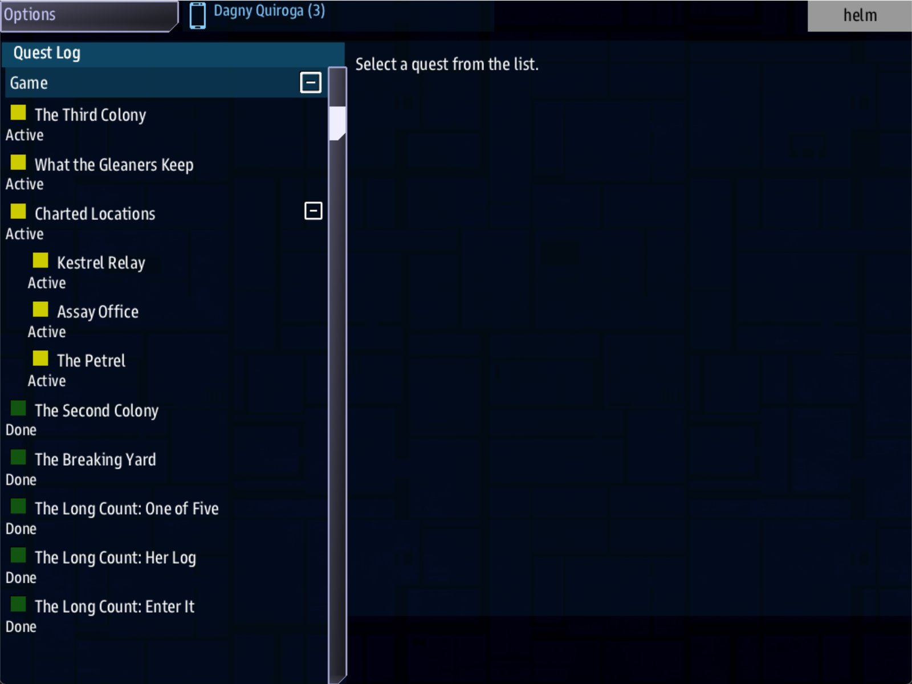

Class 6, Lecture 5 - Campaign architecture¶
What you will have at the end¶
Twenty evenings on one page, in four acts. And the first act in your universe from its first lead to its last, so that it can be walked from end to end tonight: two evenings written in full, three as a single line each, and an ending that pays the crew and asks the next act's question.
You will also have a number: what one evening costs you to write. Multiply it by twenty before you promise anybody a campaign.

The end of the walk: every line of The Long Count under Done.You add three sections to campaign.md. You change one record, add one landmark, and
add three records.
The video¶
About 5 minutes. Subtitles are available in the player.
Before you start¶
- Your
MyUniversemission as Lecture 4 left it.kestrel_verge.amdmatchesc6-04-the-episode\example\. sbs lint MyUniversesaysclean.- The game closed, and the save deleted:
C:\Cosmos\data\missions\common_data\saves\universe_save_the_kestrel_verge_1.yaml.
Words for this lecture:
| Word | Meaning |
|---|---|
| Act | A run of evenings that answers one question and ends by asking a harder one |
| Stub | An evening that is only its open so far: one lead, and nothing behind it |
| Budget | What the campaign costs you: records to write, and evenings to fill |
Step 1 - Four acts¶
Twenty evenings is too many to hold in your head, and too many for a crew to see the shape of. Five is not. So a campaign is acts, and an act is about five evenings with one question.
Add this to campaign.md, under your tentpoles.
## The four acts
| Act | Evenings | The question | It ends when |
|---|---|---|---|
| 1. Five Boats | 1 to 5 | What happened to the Tern's boats? | All five are found. Nobody died in them |
| 2. The Buyers | 6 to 10 | Who took forty-one people off five boats? | The crew learns it was not the Gleaners |
| 3. The Breakers | 11 to 15 | Where were they taken? | The crew has a heading, and has chosen a side to get it |
| 4. The Fourth Colony | 16 to 20 | Are they still there, and do they want to be found? | The count is closed |
Three rules for the table, taken from what Storm's Beacon's makers wrote about theirs.
| Rule | Why |
|---|---|
| Each act ends on a tentpole or just before one | Yours are evenings 1, 10 and 20. Acts 2 and 4 end on one |
| An act's answer is the next act's question | "Nobody died in them" is why anyone asks who took them |
| Write the last row in one line and stop | You do not know yet what the crew will have done by evening 16. The people who made Storm's Beacon moved their ending every time they added an episode |
Step 2 - Act One, evening by evening¶
Under the act table, lay out the act you are about to build.
## Act One - Five Boats
| Evening | Title | Place | The objective ends with | Written |
|---|---|---|---|---|
| 1 | One of Five | The Wren, (2, 2) | `scan` | In full |
| 2 | Two of Five | The Dunlin, (-2, 3) | `destroy` | In full |
| 3 | Three of Five | Assay Office, (3, 1) | to be chosen in Lecture 7 | Stub |
| 4 | Four of Five | The Petrel, (4, -2) | to be chosen in Lecture 7 | Stub |
| 5 | Five of Five | The Gleaners' yard, (-3, -2) | to be chosen | Stub |
| End | Five Boats | Kestrel Relay, (0, 0) | `reach` | In full |
Look at the Place column before you write anything. Two of the five evenings go somewhere you built in Class 5: the Assay Office and the Gleaners' home. A campaign that only ever goes to new places teaches the crew that nowhere matters. Send them back.
Step 3 - The spine, as stubs¶
A stub is an open with nothing behind it. It is one lead that reveals the next lead. With three of them you can walk the act from its first evening to its last, and lint can see that every evening is joined to the one before.
Find ### [The Long Count: Three of Five](s03_go). You wrote it last time as a hook.
Give it a Then: line.
### [The Long Count: Three of Five](s03_go)
---
Scope: shared
Starts when: revealed
Done when: reach 3, 1
Then: reveal s04_go
---
A boat does not empty itself. The Deepwell count every hull that is sold in the Verge.
Go to the Assay Office at (3, 1) and ask what they paid for a boat called the Plover.
## The count so far
| Boat | Where | What we know |
|---|---|---|
| The Wren | (2, 2) | Launched, and empty. Nine names in her log |
| The Dunlin | (-2, 3) | Empty, her lockers full. Her voice was a recording |
| The Plover | Sold | Ask the Deepwell who bought her |
Evening 4 goes somewhere new, so it needs a landmark. Add it to your Landmarks chapter.
### [The Petrel](the_petrel)
---
At: 4, -2
Prefab: derelict
---
The Tern's fourth boat, holed and tumbling. Her beacon is still counting.
Then the rest of the act, under Three of Five.
### [The Long Count: Four of Five](s04_go)
---
Scope: shared
Starts when: revealed
Done when: reach 4, -2
Then: reveal s05_go
---
The Assay Office sold the Plover on, and logged a second boat adrift at (4, -2). The Petrel. Nobody has claimed her.
### [The Long Count: Five of Five](s05_go)
---
Scope: shared
Starts when: revealed
Done when: reach -3, -2
Then: reveal act1_close
---
The last boat was the Skua, and the Petrel's beacon puts her in the Gleaners' breaking yard at (-3, -2). Go and see whether she is still a boat.
### [The Long Count: Five Boats](act1_close)
---
Scope: shared
Starts when: revealed
Done when: reach 0, 0
Reward: 1000 credits
---
 Registrar Amsel, who keeps the Count at Kestrel Relay
Five boats, and not one body. Forty-one people left the Tern alive and went somewhere together.
## The count, closed
| Boat | Where | What we know |
|---|---|---|
| The Wren | (2, 2) | Launched, and empty. Nine names in her log |
| The Dunlin | (-2, 3) | Empty, her lockers full. A lure |
| The Plover | (3, 1) | Sold on by the Assay Office |
| The Petrel | (4, -2) | Holed and adrift. Her beacon still counting |
| The Skua | (-3, -2) | In the Gleaners' yard |
Take the Count home to Kestrel Relay. Amsel will want to enter it herself.
A stub is a real evening, only a short one. Played as it stands, evening 4 is: jump to the Petrel, read the card, and the next lead appears. That is thin, and it is playable. If the crew outruns your writing, they get a thin evening and not a dead end. A stub is one paragraph, with no table. The count is carried by the act's ending instead.
The act's ending is a page. Five Boats is a tentpole: the crew reads it at the
moment the first act turns, so it gets more than a sentence. Its first line is a face,
the way Class 2 Lecture 2 put the harbormaster on a quest: a face:// picture with a
whole face string inside its round brackets, then the words that name who is speaking. This one is
Registrar Amsel, who keeps the Count at Kestrel Relay. Copy the face string exactly,
every letter, number and semicolon. Lint warns about a face it cannot read, but not about
one cut short at a semicolon. Under her come two paragraphs
and the whole count, all five boats, in one table.
The act's ending has no Then: line. Act Two is not written. When the crew finishes
Five Boats, no new lead appears, and that is the truth. Tell them at the table: "that is
the end of Act One." When you have written evening 6, you add Then: reveal s06_go to
this record. That carries on a crew that has not finished Five Boats yet. For a crew
that has, it does nothing: a finished step does not reveal again. Lecture 11 measured
that, and builds the one step that carries a finished act into the next. Adding a
record between evenings is safe: Lecture 1 measured it.
Step 4 - Where the ending goes¶
In Class 5 Lecture 7 you may have written a goal with a Win: line. Here is what a
Win: does to a campaign. All of it was measured.
| What happens | What it means |
|---|---|
| The moment the step is done, the game ends, with your sentence | It ends the evening wherever the crew is. Not at home, not after the reward |
| The save keeps the step as Done | The crew can Continue. They start in the system where they won |
| After Continue the game goes on, and nothing ends it | Jobs, leads and hails all still work |
| The step is Done for good | A Win: can happen once in a save. It is spent |
So a campaign has one Win:, on the last step of the last evening, and you write it
last. Until then the file has no ending in it, and that is correct.
If your universe has Break the Bone Pile from Class 5, the crew can win the game in the
second week. You have two honest choices. Leave it: it was the ending of your Class 5
story, and winning it does not stop the campaign. Or hold it back: take the
Then: reveal goal_bone_pile line off the step that reveals it. Lint will then warn,
correctly, that nothing reveals the goal (never-revealed). Leave that warning standing
until Act Four gives the goal a new place.
Step 5 - The budget¶
Now count. The printed bible from Class 5 Lecture 9 counts for you.
Open the file it names. Near the top is a block called The shape of it.
For the universe as this page has built it, on Class 5 Lecture 5's file:
| The bible says | Number | What it is |
|---|---|---|
| records | 40 | Everything you have written: sides, jobs, places, goods, steps, calls |
| spine / pool | 17 / 23 | Records the story runs through, and records that are there to be found |
| beats | 10 | Steps in a row, from the first lead to the act's ending |
| causal edges | 14 | Joins: one record leading to another |
Your numbers are higher if you went on through Class 5. The one to watch is beats. It goes up by three for every ordinary evening you write.
Then count one evening by hand, from Lecture 4's pattern.
| One ordinary evening | Count |
|---|---|
| Records | 4: a landmark, an open, an objective, a way home |
| Lines in the file | About 45 |
| Sentences the crew reads | 4 texts, the count's table and a card line: about 10 sentences |
| Words you change in the pattern | The slots in Lecture 4's table |
And the campaign:
| The Long Count | Count |
|---|---|
| Ordinary evenings | 17, at 4 records: 68 |
| Tentpoles | 3, at 6 to 8 records: about 21 |
| Act endings | 4 |
| Records in all | About 93 |
| Written so far | 13: three landmarks, six steps of evenings 1 and 2, three stubs and an ending |
Add the last thing only you can measure. Look at the clock: how long did evening 2 take
you to write in Lecture 4, sheet and all? Write it in campaign.md, and multiply.
## Budget
| Thing | Count |
|---|---|
| Ordinary evenings | 17 |
| Tentpoles | 3 |
| Records to write, about | 93 |
| Records written | 13 |
| One evening takes me | ___ minutes to write |
| Act One will take me | ___ |
| The campaign will take me | ___ |
What an evening is made of, besides the spine. An evening of play is 25 to 45 minutes. The spine of an ordinary episode is perhaps half of that. The rest is what the universe you built in Class 5 gives the crew for nothing, every week:
| Used once | There every week |
|---|---|
| A lead. Done is done | Jobs. A side's stations offer them again and again |
| A landmark's card, the first time | Hails. Each side, each captain |
| A reward on a step | Trade, and a galaxy of systems the game rolled |
| A tentpole | The standing the crew is building |
This is why you spent a class on the sandbox first. You are not writing twenty evenings of things to do. You are writing twenty reasons to go out into a place that already has things to do in it.
Step 6 - Check it¶
Save both files.
Each row below was made on purpose, one change to the finished files, then linted. None of these four was played.
Mistakes lint finds
| The mistake | What lint says |
|---|---|
Two steps reveal the same record: Three of Five says Then: reveal s05_go, and so does Four of Five |
A warning on Four of Five: "waits to be revealed, and nothing reveals it" (never-revealed). Evening 4 has been skipped |
A step reveals the evening after next: Four of Five says Then: reveal act1_close |
The same warning, on Five of Five |
A mistake lint cannot see
| The mistake | What lint says |
|---|---|
A stub with no Done when: line |
clean. Nothing can finish the step, so the act stops there |
One thing looks wrong and is not: two Then: lines on one step. Lint says clean,
and both are done, in order (Lecture 2 played it). On the spine, one step reveals one
next step.
So check by eye: every step of the spine has a Done when: line and, except the act's
ending, a Then: reveal line.
Step 7 - Walk the act¶
You are not playing tonight. You are walking the spine to see that it is joined.
- Play evenings 1 and 2 as before, or as fast as you can.
- Engage Three of Five. The ship is at the Assay Office, and Four of Five is in the Quest Log at once.
- Engage Four of Five. The card reads The Petrel. Five of Five is in the list.
- Engage Five of Five. The ship is in the Gleaners' yard, among their ships. Five Boats is in the list.
- Engage Five Boats. The ship is home, and the side has 1000 credits more.
- The Quest Log has every line of The Long Count under Done, and no new lead.
What you need to know about a long story
| Fact | What it means for your story |
|---|---|
| On the spine, a step shows one next step | The spine is one line from evening 1 to evening 20. A campaign that branches is two campaigns, and you write both |
| A stub can be played | Write the whole act as stubs first, then fill them in. The crew can never fall off the end of a half-written evening |
| A record added between evenings appears | You can write Act Two while the crew plays Act One |
A Win: is spent the first time |
One per campaign, on the last step, written last |
| The crew passes through old places on the way | Walking this act also finished two of your Class 5 leads, The Second Colony and The Breaking Yard, because the spine goes to those systems. Old leads and new ones share the map |
If something goes wrong¶
| What you see | Likely cause |
|---|---|
| The walk stops: no new lead after an evening | That evening's last step has no Then: line, or it names a key that is spelled differently on the record. Lint says which |
| An evening is skipped | Two steps reveal the same record, or one reveals the evening after next |
| A lead is in the Quest Log from the start | It says Starts when: at once. Only evening 1's open does |
| The game ended in the middle of Act One | A step with a Win: line was done. See Step 4 |
In the bible, a later step sits in beat 1 and has no reached from line |
Nothing reveals it. Lint names it too |
Exercise¶
- Write your four acts as four questions. Check that each answer is the next question.
- Lay out your Act One as a table. Mark which evenings go back to a place from Class 5.
- Write the rest of your act as stubs, and its ending.
- Lint, then walk it from the first lead to the act's ending without stopping.
- Run the bible and write the four numbers from The shape of it in
campaign.md. - Fill in the budget with your own minutes. Is the last number one you can live with? If not, the answer is fewer evenings, not thinner ones.
Checkpoint¶
You are done when all five are true:
campaign.mdhas four acts, Act One evening by evening, and a budget with your own minutes in it.sbs lint MyUniversesaysclean.- Act One can be walked from its first lead to its ending without a gap.
- There is no
Win:on any step of Act One. - You can say how many records your campaign needs, and how many you have.
Next¶
Lecture 6 gives the acts something to turn on: standing with a side that takes weeks to earn, opens a door when it is high enough, and can be thrown away in one conversation.
Further reading¶
- Class 5 Lecture 7, "Narrative and goals":
Win:,Citation:and the Goals chapter. - Class 5 Lecture 9, "Organizing a big universe": the printed bible, and the other three editions.
- Lecture 1 of this class: what the save keeps, which is what makes a stub safe.
Download this lecture's finished files (a zip of its example folder).